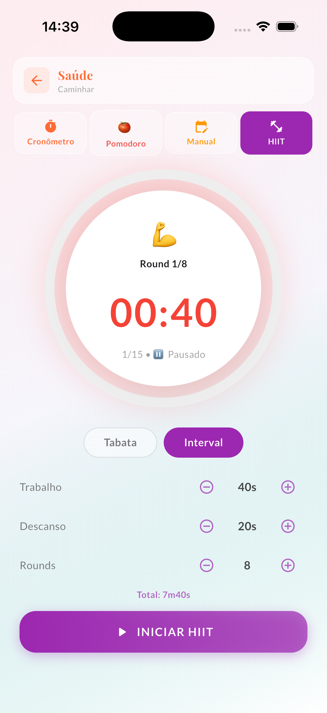
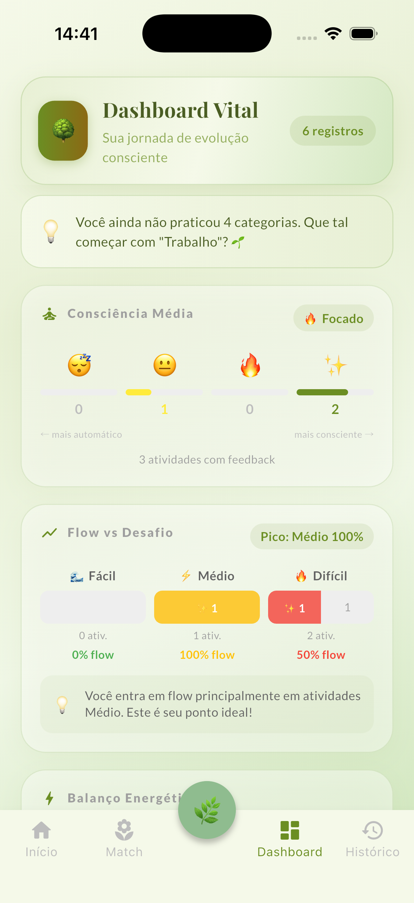

O terço que falta no seu treino
Você lota o Corpo e zera Mente e Espírito — e é por isso que estagna. O RootFlow traz o timer HIIT e Tabata que você já usa, e mostra os dois terços que faltam para destravar recuperação, foco e longevidade.

O ponto cego
O plateau, a lesão recorrente, o sono ruim — raramente vêm de treinar pouco. Vêm de treinar só uma dimensão. Recuperação, foco e regulação são o que transformam esforço em adaptação. O RootFlow torna esse ponto cego visível.
A casa que você já conhece
Cada round que você crava entra automaticamente no seu balanço. Você não muda de hábito; você ganha um raio-X dele.
Corpo, Mente e Espírito em percentuais. O choque visual de ver Corpo no talo e o resto vazio é o que muda o comportamento.
Mede se você está progredindo ou só repetindo. Adaptação acontece na dose certa — nem fácil demais, nem no vermelho.
Cinco dias intensos? Ele prioriza recuperação passiva. O contrapeso que atletas sérios sabem que precisam — e sempre pulam.
O loop
Abra o timer, escolha Tabata ou HIIT, dê play. No fim, registre como foi — intensidade e presença, em dois toques.
O Dashboard revela o que o relógio do treino esconde: o quanto você investiu em Corpo e o quanto deixou de lado.
O Match lê sua semana e sugere o contrapeso certo — mobilidade, respiração, descanso ativo. Longevidade é estratégia.
"Eu treinava 6x por semana e estagnei. Faltava o resto. O Match me forçou a descansar — e meus PRs voltaram a subir."

Seus dados, seu corpo
Tudo local. Sem conta, sem servidor, sem rede. O RootFlow funciona offline e seus registros nunca saem do aparelho. Exporte para sua planilha quando quiser, apague quando quiser.
Comece hoje
Pagamento único de R$ 28. Sem assinatura, sem conta. Use o timer que você já ama e descubra o que está segurando seu progresso.